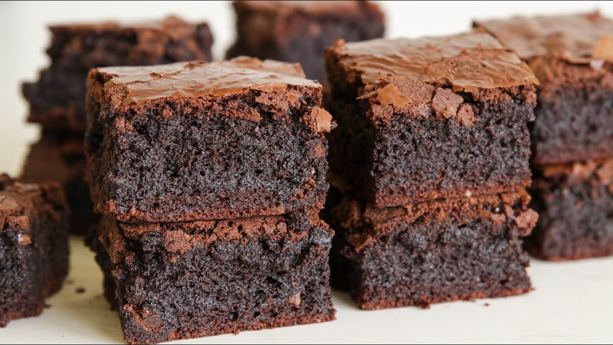

Brownie

The ultimate brownie recipe
The perfect recipe for rich, chocolately and fudgy brownies.
Ingredients
- Black chocolate - 240g
- Cocoa powder - 75g
- Butter - 280g
- Sugar - 400g
- Brown sugar - 100g
- Vanilla extract - 2 tsp
- Salt - 2 pinches
- Eggs - 6
- Flour - 120g
Steps
- Melt the butter.
In the meantime cut the chocolate finely and add it in a bowl with 25g of cocoa powder.
Add the melted butter and wisk until smooth
- In a larger bowl add all the sugar, the vanilla extract, the salt, one egg and mix.
Then add 2 more eggs and mix. At last add the remaining eggs and mix for a few minutes.
- Add the chocolate ganache and mix.
Now add the flour and 50g of cocoa powder and mix the batter lightly with a spatula.
- Lastly, pop the mixture in the oven at 180°C for about 35 minutes for a fudgy consistency.
Enjoy!